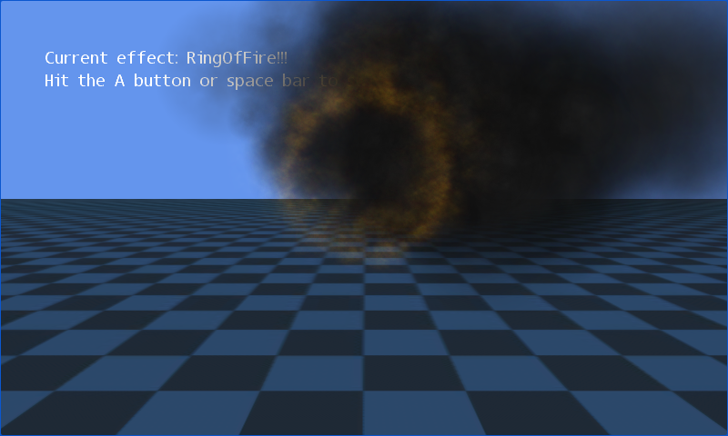

XML Particles
Ported from Microsoft's XNA 4.0 XML Particles sample.
Source for this sample on GitHub ↗

Play ▸Opens in a new tab.
About this sample
Five particle systems draw explosions, trails, smoke and fire above a 3D grid. Their appearance comes from XML settings compiled by the original content pipeline. Switch effects, orbit the camera and zoom in to examine them.
Controls
| Action | Keyboard | Gamepad |
|---|---|---|
| Switch effect | Space | A |
| Orbit camera | Arrow keys or W/A/S/D | Right stick |
| Zoom out / in | Z / X | Left / right trigger |
| Reset camera | R | Press right stick |
| Exit | Escape | Back |